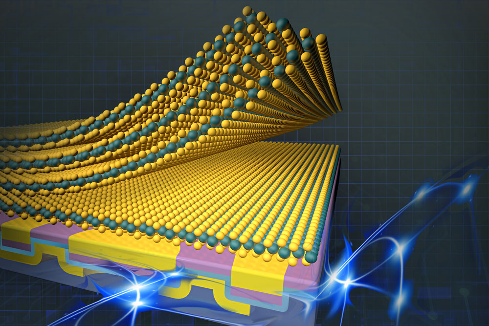
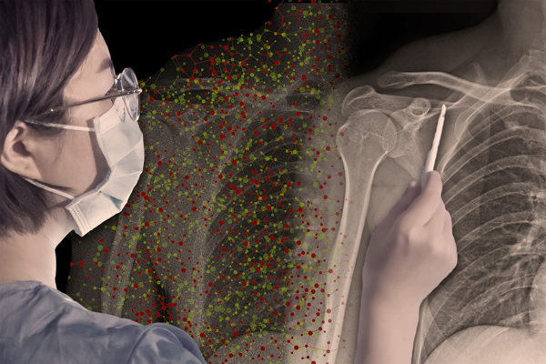
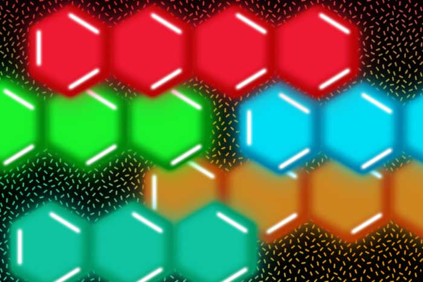

About us
Education
At MIT, we revel in a culture of learning by doing. In 30 departments across five schools and one college, our students combine analytical rigor with curiosity, playful imagination, and an appetite for solving the hardest problems in service to society. From science and engineering to the arts, humanities, social sciences, and interdisciplinary programs, we offer excellence across the board.
Our priorites

Our undergraduates work closely with faculty, tackle global challenges, pursue fundamental questions, and translate ideas into action. The core of the Institute’s teaching and research enterprise, our graduate students and postdocs represent one of the most talented and diverse cohorts in the world. To complement its academics, MIT offers a vibrant campus environment with a wide range of clubs, teams, programs, and activities so that all students can cultivate personal growth, build community, and prioritize wellbeing.
Research News
EECS researchers have safely integrated fragile 2D materials into devices. The advance opens a path to next-generation devices with unique optical and electronic properties: These materials, only a few atoms thick, exhibit some incredible properties.
Dec 10, 2023
Research News
A new onboarding technique can help workers collaborate more effectively with AI assistants. The process finds situations where the human trusts the AI either too much or too little, then develops rules about them and creates training exercises to guide the user.
Research News
Chemists have developed a way to make light-emitting molecules known as acenes more stable, so they can be tuned to produce different colors. The team built molecules that emit red, orange, yellow, green, or blue light and could be deployed in a variety of applications.